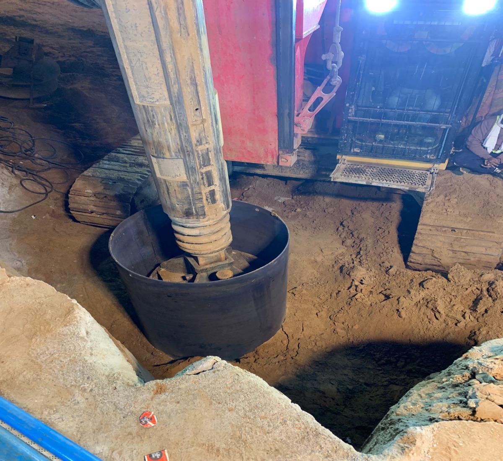

Humanitarian Operation
Recent Update
Deployment of Mait Machine for Rescue Operation in Kotputli


In a recent incident in Kotputli, Rajasthan, Shree Govind Construction deployed its specialized Mait Hydraulic Piling Rig to assist in a borewell rescue operation.
The authorities initially engaged the NDRF team for the rescue using traditional methods. However, as the situation required deeper access through difficult soil, our heavy-duty machinery was called in during the later stages to expedite the process.
Our team mobilized immediately upon request, demonstrating the capability of this advanced machinery to create parallel access tunnels in emergency scenarios. We utilized the full power of the rig to assist the administration in their efforts.